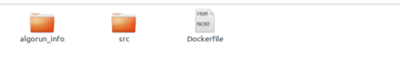

How to package your algorithm to Algorun platform?
In this page, we will show you how to package your algorithm to Algorun. If you have not worked with Docker before, please download our full documentation to get started.
If you are familiar with Docker, the below guide is sufficient for you to start ..
Step 1: Prepare your algorithm
- Your algorithm should accept the input as a file and produce the output to another file.
Your algorithm should run as following:
command input_file [FLAGS] [-f output_file]where:commandMandatory The command you use through terminal to run your algorithm input_fileMandatory The input_file your algorithm read and process FLAGSOptional If you have different modes for running the algorithm, you specify them as flags -f output_fileOptional If your command allow to specify a specific output file as a parameter, it should be in this format. If not, your algorithm should still write the output to a file (you will specify its name in the next step)
Step 2: Wrap your algorithm in a container
To make the process easy, we have provided you with a directory that contains all what you need. You will just edit the files on it. Go to our repository and clone it to your machine (You will just use ‘try it’ directory for now). When you open the directory, you should be able to figure out the folders as in the following figure:
- First, you put all your algorithm source code in src folder.
- Second, you edit each file in the algorun_info folder. The information you put here will be
displayed in the web page of your algorithm.
- algo_name.txt: your algorithm name
- auors.txt: the names of the authors of your algorithm separated by commas.
- short_description.txt: a one-line description of what your algorithm stands for.
- long_description.txt: describe your algorithm in details.
- input_example.txt: give an example of how the input should be formatted.
- output_example.txt: give an example of how the output looks like.
- params.txt: tell users of your algorithm about the default configuration parameters of your algorithm.
- web_link.txt: direct users to your algorithm website.
- The last step is to edit the Dockerfile. Open the file and follow the instructions in it. If you want to get a better understanding, you may navigate to the index in this documentation (You do not have to; comments in the Dockerfile are self-illustrative).
Step 3: Build, run and test your container
- In you working directory, use the following command to build your container:
docker build -t <username>/<algorithm> . - Make sure that the build is successful.
- Use the following command to run your container:
docker run -d -p 31331:8765 <username>/<algorithm> - Open your web browser and go to
http://localhost:31331and see your algorithm in action.
Example
In ‘try it/src’ directory we have added a very simple ruby application that reads an input, appends a string to it and send it back (not an algorithm; but simple for illustration). We have also edited all files in ‘algo_run’ info directory as a sample algorithm and then we added the instructions necessary in the Dockerfile. You can check the appendix in the full documentation! for a detailed example. Lastly, we build and run our container as indicated in the previous section.